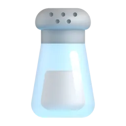
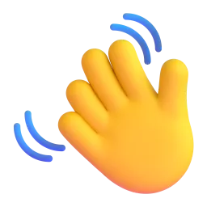
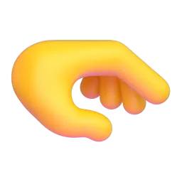
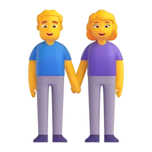
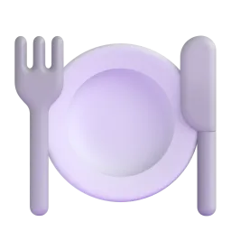
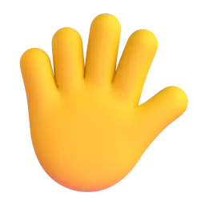
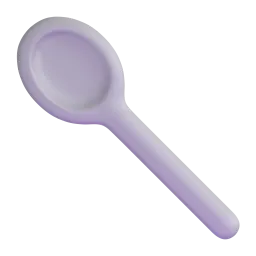

Artrit için en iyi tutuş hangisi?
Bir tuzluğu kullanmanın 5 yolunu karşılaştırdık.
Çevirmek ve sıkıştırmak en çok ağrıtan hareketlerdir (AAOS, t.y.).


Bilek tekrar tekrar hareket eder ve doz kontrol edilemez.
Başparmağın tabanı uygulanan kuvvetin 12 katını taşır (Cooney ve Chao, 1977).

Daha iyi, ama bileği bükülü hâlde zorlar.
Kuvveti dağıtır ve elin gücünün sadece %2–3'ünü ister (Mathiowetz vd., 1985).
Sonuç: tuzluğu tutarken 4 parmakla sıkmak en az ağrıtan yoldur. Dosis 5 bu yüzden böyle çalışır.
İdeal kullanıcı: aileyi ağırlayan yeni evli bir çift



Artriti olanların neredeyse yarısı 65 yaşın üzerindedir (Fallon vd., 2023).
→ 4 parmakla sıkılır, çevirmek yok.
Mikroplar yüzeylerden parmaklara geçer (Winther vd., 2007).
→ Hava geçirmez: kimse tuza dokunmaz.

0,5 gDSÖ günde 5 g'dan az tuz önerir (WHO, 2012).
→ Her basışta 0,5 g: 10 basış = günlük sınır.